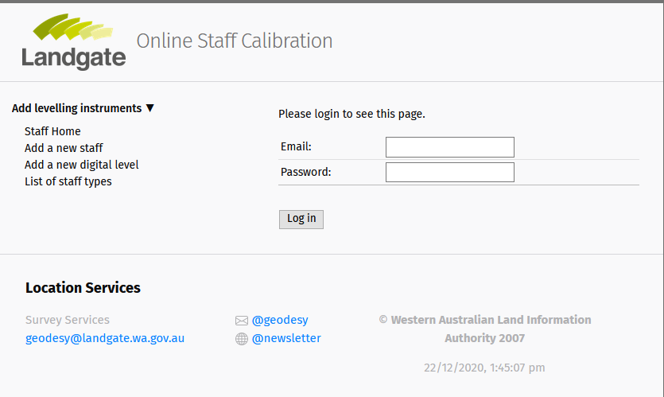
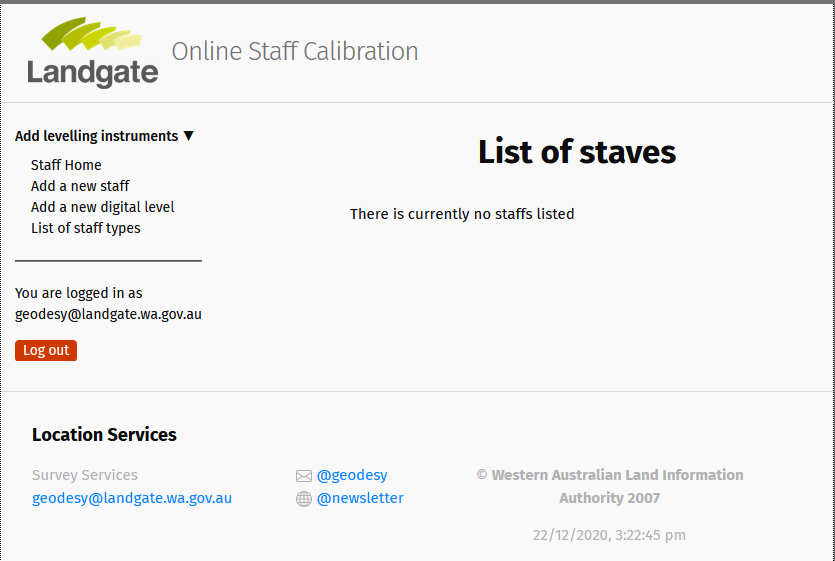
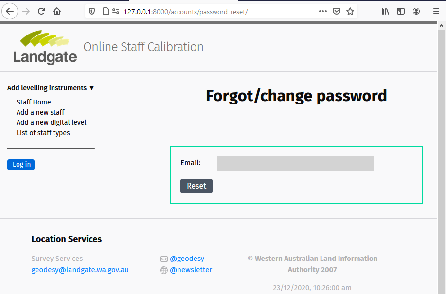

Setting up your authentication views¶
Overview¶
Django web framework provides almost everything that is required to create authentication pages to handle login, log out, and password management by default. This includes a URL mapper, views and forms. However, it does not include the templates and should be created to enable the above functions by users/clients.
Django’s default authentication¶
Apart from the templates, the whole of the authentication views and urls can be achieved by just adding the below one liner code in the project urls.py (i.e., staff/staff/urls.py):
#filename: staff/staff/urls.py
...
urlpatterns += [
path('accounts/', include('django.contrib.auth.urls')),
]
Views related to the above URLs are defined using class-based views and uses the templates located in a folder called registration in the templates directory in the project folder (i.e., staff/templates/registration/).
class LoginView(SuccessURLAllowedHostsMixin, FormView):
template_name = 'registration/login.html'
class LogoutView(SuccessURLAllowedHostsMixin, TemplateView):
template_name = 'registration/logged_out.html'
class PasswordResetView(PasswordContextMixin, FormView):
template_name = 'registration/password_reset_form.html'
class PasswordResetDoneView(PasswordContextMixin, TemplateView):
template_name = 'registration/password_reset_done.html'
class PasswordResetConfirmView(PasswordContextMixin, FormView):
template_name = 'registration/password_reset_confirm.html'
class PasswordChangeView(PasswordContextMixin, FormView):
template_name = 'registration/password_change_form.html'
class PasswordChangeDoneView(PasswordContextMixin, TemplateView):
template_name = 'registration/password_change_done.html'
Modifying the default authentication¶
As we have a CustomUser model and customised the user forms, we will need to modify the views and URLs to adapt to the model and forms and create templates to accept the forms from views.
Additionally, the password reset/change views and templates are designed to allow users/clients to reset/change the password directly on the website. For the Staff Calibration website, users/clients will be asked to reset/change their passwords by sending a activation code to their registered emails. This will require significant changes to the views, URL, and templates. Let’s start by creating a Log in view, it’s URL mapper and template.
Project URL¶
Open the project urls.py (staff/staff/urls.py) and create a link to the accounts application:
# filename: staff/staff/urls.py
...
urlpatterns = [
path('admin/', admin.site.urls),
# path('accounts/', include('django.contrib.auth.urls')), # Comment this for now
path('accounts/', include('accounts.urls')), # Added now
path('staffs/', include('staffs.urls')),
]
urlpatterns += static(settings.STATIC_URL, document_root=settings.STATIC_ROOT)
Accounts URL¶
Create a file called urls.py in the accounts directory and add the following lines:
# filename: staff/accounts/urls.py
from django.urls import path
app_name = 'accounts'
urlpatterns = [
# will add one by one later
]
Logging in¶
User Login Form: Django provides a built-in
AuthenticationFormfor logging users with a username and password and also raises a number ofValidationErrorsfor incorrect authentications. In this project however, the authentication form must use an email and a password for logging users in. So instead of the default AuthenticationForm, we will create a new log in Form calledUserLoginFormas shown below:#filename: staff/accounts/forms.py ... class UserLoginForm(forms.Form): # Note: forms.Form NOT forms.ModelForm email = forms.EmailField(widget=NonstickyTextInput( attrs={'type':'text','name': 'email','placeholder':'Enter email address'}), label='Email') password = forms.CharField(widget=forms.PasswordInput( attrs={'type':'password', 'name': 'password','placeholder':'Enter password'}), label='Password') def clean(self): user = self.authenticate_user() if not user: raise forms.ValidationError("Sorry, that login was invalid. Please try again.") else: self.user = user return self.cleaned_data def authenticate_user(self): email = self.cleaned_data.get('email') if email: try: email = email.lower() user = CustomUser.objects.get(email__iexact=email) if user.check_password(self.cleaned_data['password']): return user else: raise forms.ValidationError('Login failed! Incorrect email and/or password given') except ObjectDoesNotExist: pass return None
View - In the views.py file, add the lines as shown below.
#filename: staff/accounts/views.py from django.shortcuts import render,redirect from django.contrib.auth import login, logout from .forms import UserLoginForm # Create your views here. def login_view(request): if request.method == 'POST': form = UserLoginForm(data = request.POST) if form.is_valid(): user = form.authenticate_user() if user is not None: if user.is_active: login(request,user) return redirect('staffs:staff_list_home') else: form = UserLoginForm() return render(request,'accounts/login.html',{'form':form,})
The view takes in the
UserLoginForm, authenticates the user using itsauthenticate_via_email()method, checks if the user is active and logs in the user if authenticated and active, and finally redirects to thestaff_list_homepage. If not authenticated, it will raise a number ofValidationErrorsindicating what has gone wrong (see below).
Login view showing authentication error¶
URL Mapper - In the accounts URL mapper(urls.py), add these new lines:
#filename: staff/accounts/urls.py from . views import views # import the views urlpatterns = [ path('login/', views.login_view, name='login'), # add the login_view ]
Import
viewsfrom views.py and add thelogin_viewfunction to the URL pathlogin. A name is given to this URL as an identifier and can be used for redirecting paths in views and templates.Templates - We will keep all the authentication related templates in the accounts folder (staff/accounts/templates/accounts/). As indicated in views.py, create a file with a name login.html in the acounts template folder and copy the following html lines:
# filename: accounts/templates/accounts/login.html {% extends "base_generic.html" %} {% block content %} {% if form.errors or form.non_field_errors %} <div class="post-content alert error"> {% for field in form %} {% for error in field.errors %} <p> {{ error }} </p> {% endfor %} {% endfor %} {% for error in form.non_field_errors %} <p> {{ error }} </p> {% endfor %} </div> {% endif %} {% if user.is_authenticated %} <p>Your account doesn't have access to this page. To proceed, please login with an account that has access.</p> {% else %} <p>Please login to see this page.</p> <form method="post" action="{% url 'accounts:login' %}"> {% csrf_token %} <table> <tr> <td>{{ form.email.label_tag }}</td> <td>{{ form.email }}</td> </tr> <tr> <td>{{ form.password.label_tag }}</td> <td>{{ form.password }}</td> </tr> </table> <button type="submit"> Log in </button> <input type="hidden" name="next" value="{{ next }}" /> </form> {% endif %} {% endblock %}The login template extends on the base template (base_generic.html). The template does the following actions:
Display any form errors, if ValidationError is raised
Checks if user is already logged in (or authenticated), and if already logged in, it will display the message - Your account doesn’t have access ….
Otherwise, it will display the login form for users to fill in the email and password
It has a submit button with a name Log in so that users can log in by clicking the button. ValidationErrors will be raised during this time if authentication is not successful.
Note the form
method(specifying type of request) andaction(specifying where to send the form-data when submitted). The action{% url `accounts:login' %}will send send the form-data to thelogin_viewthrough the URL mapper identified by login.
Trying logging in - If the local server is already running, go to http://127.0.0.1:8000/accounts/login and login by the superuser credentials. If successful, the page will divert to staff_list_home page.
Log in interface¶
Logging out¶
Logging out is quite simple compared to logging in. In this case, we will define a URL, a view to redirect after logging out and add some buttons in the base template to let users know if they are logged in or logged out.
View - Add the following lines in the views.py:
def logout_view(request): logout(request) return redirect('staffs:staff_list_home') # redirect to staff home page
The view uses the
logoutfunction fromdjango.contrib.authto log out once the request is received (typically by clicking a button or navigating to the log out URL) and redirects to thestaff_list_homepage.URL Mapper - Add the
logout_viewfunction to theurlpatternsin urls.py:... urlpatterns = [ path('login/', views.login_view, name='login'), path('logout/', views.logout_view, name='logout'), # add the logout_view ]
To test the logout, navigate to http://127.0.0.1:8000/accounts/logout/ and press ENTER. That’s it, no template required for this one. However, it can also work with a template, as seen in the default view earlier.
Log out button - It was able to log in and log out but the template does not say if the user is logged in our logged out. To help with this, we can add a Log in and a Log out button in the navigation column in the base template (base_generic.html). Also, replace the Log in with the user email when logged in and not display the log out button once the users logged out.
# filename: staff/templates/base_generic.html ... <br><hr><br> <div> {% if user.is_authenticated %} <p>You are logged in as <br> <span>{{user.email}}</span></p> <a class="px-2 py-1 text-sm leading-3 rounded text-white bg-orange-600 hover:bg-orange-500 focus:outline-none focus:shadow-outline transition duration-150 ease-in-out" href="{% url 'accounts:logout' %}">Log out</a> {% else %} <a class="px-2 py-1 text-sm leading-3 rounded text-white bg-blue-500 hover:bg-blue-500 focus:outline-none focus:shadow-outline transition duration-150 ease-in-out" href="{% url 'accounts:login' %}">Log in</a> {% endif %} </div> </div> </nav>The <a> tags will act as buttons and by clicking them will redirect to the URLs indicated by the
href. For log in, it will be redirected to the log in page and vice versa. Once logged in, it will also retrieve and display the authenticated email above the log out button. Notice that the template checks if the user is authenticated by using the python-like scriptif user.is_authenticated.User logged in with user email and log out button displayed¶
Password reset¶
The process of resetting passwords involves sending a cryptographically secure email with a one-time link to a reset page. As seen before, Django has everything covered with veiews and URLs provided by the Django auth app. Let’s use them and modify the required templates. All password reset templates are normally placed in staff/templates/registration/.
Create a password reset link alongside the
Log inbutton in the login template (accounts/templates/accounts/login.html). Name it as “Lost password” and redirect the URL topassword_resetas shown below:#filename: accounts/templates/accounts/login.html ... </table> <div class="grid-2 items-center justify-center"> <div> <button type="submit">Log in</button> <input type="hidden" name="next" value="{{ next }}" /> </div> <div> <a href="{% url 'accounts:password_reset' %}">Lost password?</a> # link to password reset page </div> </div> </form>

Log in page with a lost password link.¶
- Settings: To be able to send emails to users, we need to configure the email in the
settings.py. For the development version, we can just add
EMAIL_BACKEND = 'django.core.mail.backends.console.EmailBackend'in a new line in settings.py. No emails will be send but it will be displayed in the consoleFor the production version, here is an example using gmail:
#filename: staff/staff/settings.py ... EMAIL_BACKEND = 'django.core.mail.backends.smtp.EmailBackend' EMAIL_HOST = 'smtp.gmail.com' EMAIL_USE_SSL = False # use port 465 EMAIL_USE_TLS = True # use port 587 EMAIL_PORT = 587 EMAIL_HOST_USER = 'geodetic.landgate@gmail.com' EMAIL_HOST_PASSWORD = '*******'
- Settings: To be able to send emails to users, we need to configure the email in the
URLs: In the accounts URL mapper (urls.py), import
viewsasauth_views(as we already have aviewfrom views.py) from Djangoauthand add the four paths required to reset the passwords as shown below.#filename: accounts/urls.py from django.contrib.auth import views and auth_views # import Django auth views from django.urls import reverse_lazy # import this one to redirect URLs urlpatterns = [ .... path('password_reset/', auth_views.PasswordResetView.as_view(template_name="registration/password_reset_form.html", email_template_name = "registration/password_reset_email.html", success_url = reverse_lazy("accounts:password_reset_done")), name='password_reset'), path('password_reset_done/', auth_views.PasswordResetDoneView.as_view( template_name="registration/password_reset_done.html"), name='password_reset_done'), path('password_reset_confirm/<uidb64>/<token>', auth_views.PasswordResetConfirmView.as_view(template_name="registration/password_reset_confirm.html", success_url = reverse_lazy("accounts:password_reset_complete")), name='password_reset_confirm'), path('password_reset_complete/', auth_views.PasswordResetCompleteView.as_view( template_name="registration/password_reset_complete.html"), name='password_reset_complete'), ]
password_reset uses the
PasswordResetViewsubclass to render the password reset form (to insert email) and an email template (containing the link to password reset page). After inserting the email and submitting the request (through a button - usually called Send email), it will direct the user to a password_reset_done URL, which says the check email, if the request is successful.password_reset_done is explained above.
password_reset_confirm creates a token link that is inserted in the email and when clicked, it will direct to the password_reset_confirm page for users to change the password. After submitting the new password, it will redirect to the password_reset_complete page saying that the password has changed.
A Log in button can be placed on the page so that users can immediately go to the log in page.
Password reset form and the submit button (named Reset)¶
Sign up/registration¶
Now that we are able to log in and reset or change passwords, if required, we would like the users to register and sign up on the Staff Calibration website. The registration process needs to be secure so that the user is verified through their email address provided before being able to log in, i.e., the user will be set to is_active=False and will be set to True only when it is verified - similar to password_reset.
URL - Let’s start by defining a URL mapper to the sign up view. In the accounts URL (urls.py),
add path = “signup”, view=”signup_view” and name=”signup” as shown below:
#filename: staff/accounts/urls.py ... urlpatterns += [ path('signup/', views.signup_view, name='signup'), ]
add a path to generate an activation token and link to be inserted into the email
urlpatterns += [ path('signup/', views.signup_view, name='signup'), path('activate/<slug:uidb64>/<slug:token>/', views.activate_account, name='activate_account'), ]
finally, add a path to redirect to a page saying that activate link has been sent to the registered email.
urlpatterns += [ path('signup/', views.signup_view, name='signup'), path('activate/<slug:uidb64>/<slug:token>/', views.activate_account, name='activate_account'), path('sent/', views.activation_sent_view, name = 'activation_sent'), ]
View - In the views.py, add the
signup_viewfunction (as defined in the URL above) as shown below. The view uses theCustomUserCreationFormfrom forms.py,Groupmodel fromdjango.auth, creates an email message andEmailMessagefromdjango.core.mailto send activation links after signing up. If the user is already logged in (oris_authenticated), the user will be logged out and redirected back to log in with a message telling the user to log in.def signup_view(request): if request.user.is_authenticated: logout(request) messages.warning(request, 'You have already signed up. Please log in.') return redirect('accounts:login') else: if request.method == 'POST': form = CustomUserCreationForm(request.POST) if form.is_valid(): email = form.cleaned_data.get('email') user = form.save(commit=False) user.is_active=False # Populate and save the user authority if Other if user.authority.authority_name=="Other": authority_name = request.POST['authority_name'] authority_abbrev = request.POST['authority_abbrev'] Authority.objects.update_or_create( authority_name=authority_name, authority_abbrev = authority_abbrev ) user.authority = Authority.objects.get(authority_name__exact=authority_name) # save user user.save() # Get the group and assign them geodesy_group = ['kent.wheeler@landgate.wa.gov.au', 'khandu.k@landgate.wa.gov.au', 'vanessa.ung@landgate.wa.gov.au', 'brendon.hellmund@landgate.wa.gov.au', 'tony.castelli@landgate.wa.gov.au', 'ireneusz.baran@landgate.wa.gov.au'] geodesy = Group.objects.get(name='Geodesy') landgate = Group.objects.get(name='Landgate') others = Group.objects.get(name='Others') if 'landgate.wa.gov.au' in email: user.groups.add(landgate) else: user.groups.add(others) # More authority to geodesity group if email in geodesy_group: user.groups.add(geodesy) user.is_staff = True # Prepare to send activation code current_site = get_current_site(request) email_subject = 'Activate Your Account' message = render_to_string('registration/activate_account.html', { 'user': user, 'domain': current_site.domain, 'uid': urlsafe_base64_encode(force_bytes(user.pk)), #.decode(), 'token': account_activation_token.make_token(user), }) to_email = form.cleaned_data.get('email') email = EmailMessage(email_subject, message, to=[to_email]) email.send() # return HttpResponse('We have sent you an email, please confirm your email address to complete registration') return redirect('accounts:activation_sent') elif request.user.is_authenticated: return redirect('/') else: form = CustomUserCreationForm() # UserCreationForm() return render(request, 'accounts/signup.html', {'form': form})
def activation_sent_view(request): return render(request, 'registration/activation_sent.html')
def activate_account(request, uidb64, token): try: uid = force_bytes(urlsafe_base64_decode(uidb64)) user = CustomUser.objects.get(pk=uid) except(TypeError, ValueError, OverflowError, CustomUser.DoesNotExist): user = None if user is not None and account_activation_token.check_token(user, token): user.is_active = True user.save() messages.success(request, 'Your account has been activated successfully. You can now log in.') return redirect('accounts:login') else: messages.error(request, 'Your activation link appears to be invalid.') return redirect('accounts:signup')
Note that the sign up process is very much similar to the
password_resetprocess except that we now a custom function-based view linking the various templates and views. It will also use the Email configuration set in settings.py.Here is a snapshot of location of authentication templates:
staff/ ├──staff/ | └──templates/ | └──registration/ | ├──password_change_done.html | ├──password_reset_complete.html | ├──password_reset_confirm.html | ├──password_reset_done.html | ├──password_reset_email.html | ├──password_reset_form.html | ├──activate_account.html | └──activation_sent.html | | └──staff/accounts/ └──accounts/ └──templates/ └──accounts/ ├──login.html └──signup.html
Permissions & decorators¶
Permissions: Django comes with a built-in permissions system. It provides a way to assign permissions to specific users and groups of users. Django automatically gives add, change, and delete permissions to all models, which allow users with the permissions to perform the associated actions via the admin site. It is possible to define custom permissions to models and grant them to specific users.
Permissions can be tested in function view using the
permission_requireddecorator or in a class-based view using thePermissionRequiredMixin. For details, go to https://docs.djangoproject.com/en/3.1/topics/auth/default/.Authorisation: Django uses sessions and middleware to hook the authentication system into request objects. These provide a
request.userattribute on every request which represents the current user. If the current user has not logged in, this attribute will be set to an instance of AnonymousUser, otherwise it will be an instance of User.In the view, we can do this with
is_authenticatedlike:if request.user.is_authenticated: # Do something for authenticated users. ... else: # Do something for anonymous users. ...
In the template, we do it with the same but without the
request:{% if user.is_authenticated %} <-- show something for authenticated users --> {% else %} <-- display none or display something for anonymous users {% endif %}
Other used permissions and authorisations are
is_staff,is_superuserand other custom permissions do allow actions such as add, delete or change model objects.
Decorators: Django also has many decorators that can be used to limit views and/or templates. Examples include
@login_required(foris_authenticated),@permission_required(forhas_perm),@staff_member_required(foris_staff), among others. For example, we can insert a@login_requiredon thestaff_createfunction so that only authenticated users can add a new staff record. We can also provide URL path tologinif the user is not logged in already like this:# filename: staff/staffs/views.py @login_required(login_url="/accounts/login") def staff_create(request): form = StaffForm(request.POST or None) ...
Note that the
@login_requireddecorator will only apply to that view function